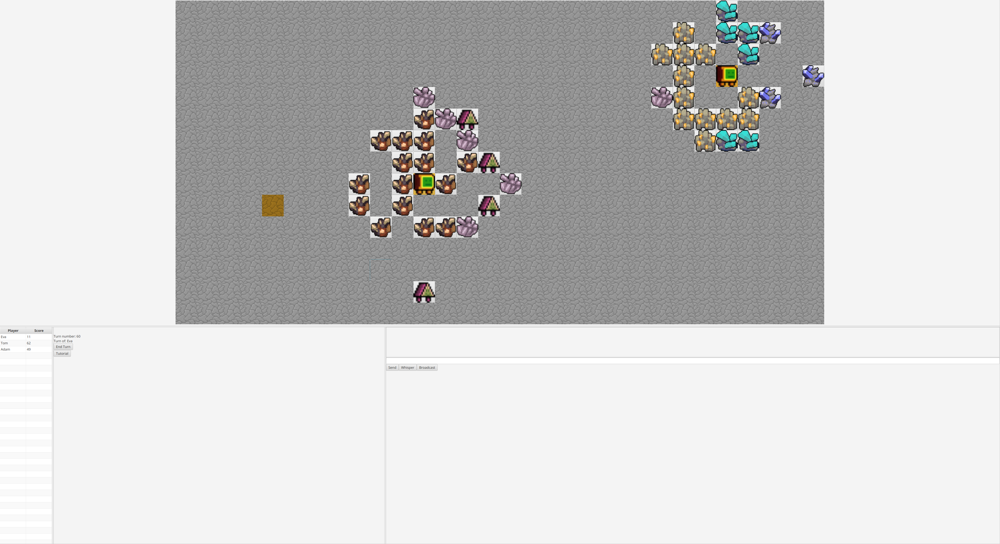

Ore Rush
A 2d, top down, turn based strategy game where the goal is finding and diggin up as much ore as possible.
Trailer
Entwickler:
- Gian Moser
- Sebastien Muheim
- Tom Rodenwald
Steuerung:
Mausclick: GUI Steuerung1-8: Auswahl eines Roboters
Esc: Spiel beenden
Pfeiltasten: Alternative Möglichkeit Felder auszuwählen
Enter: Alternative Möglichkeit für Bestätigung einer Auswahl
Inventar:
Robot: Die eigenten Roboter die man kontrolliertEnemy Robot: Die Roboter die die Gegner kontrollieren
Radar: Deckt erze und Gegnerische Roboter in der Nähe auf
Trap: Schaltet Roboter die in der Nähe einer Falle graben aus. Jede Falle kann nur einen Roboter ausschalten
Schwarzes Loch: Steuerung der Gegner wird invertiert